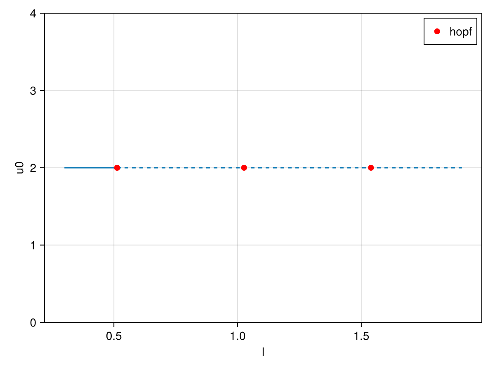
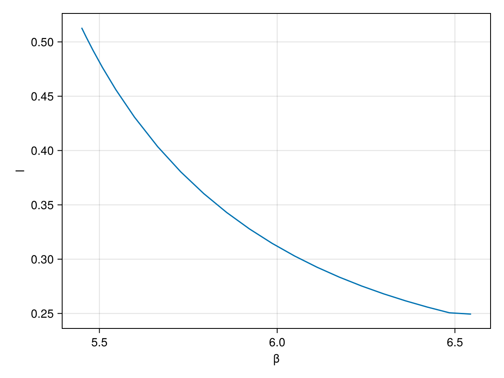
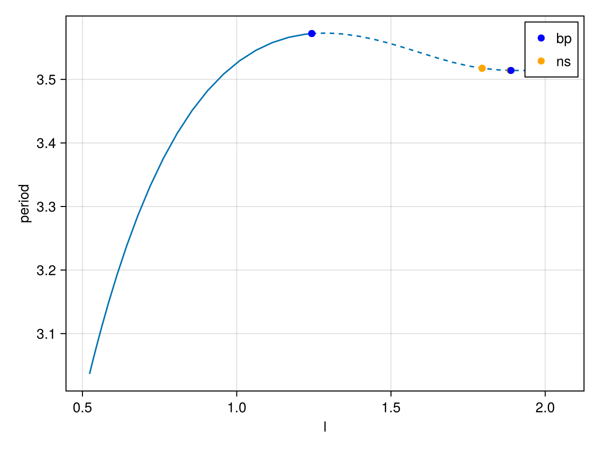
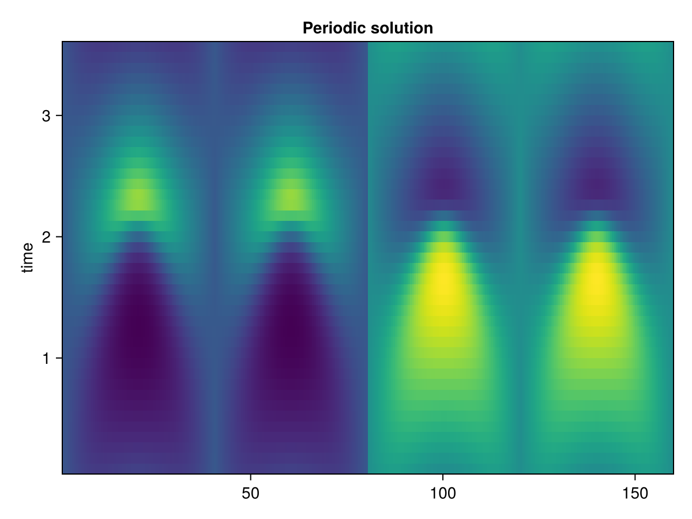

🟢 Brusselator (reaction–diffusion): Hopf bifurcation and periodic orbits
We consider the Brusselator reaction–diffusion system on $\Omega=(0,1)$ with Dirichlet boundary conditions:
\[\begin{aligned} \partial_t u &= \frac{D_1}{l^2}\,\partial_{xx} u + \alpha - (\beta+1)u + u^2 v,\\ \partial_t v &= \frac{D_2}{l^2}\,\partial_{xx} v + \beta u - u^2 v. \end{aligned}\]
The homogeneous steady state $(u,v)=(\alpha,\beta/\alpha)$ is used as initial guess. We continue it with respect to the parameter $l$, detect the Hopf bifurcation, compute its normal form, continue the Hopf point in the second parameter $\beta$ and finally switch to the branch of periodic orbits.
using CairoMakieCairoMakie.activate!()using LinearAlgebrausing Gridapusing Gridap.FESpacesusing GridapBifurcationKitusing BifurcationKitconst BK = BifurcationKitBK.set_plot_backend!(BK.BK_Makie())# plot the two components of a solution (the first half of the dofs is u, the second is v)function plotsol!(ax, x; k...) _x = x isa BK.BorderedArray ? x.u : x n = length(_x) ÷ 2 lines!(ax, _x[1:n]; label = "u", k...) lines!(ax, _x[n+1:end]; label = "v", k...)endplotsol! (generic function with 1 method)FEM formulation
We use a second order Lagrange interpolation and impose the initial guess on the boundary through the TrialFESpace:
Nx = 80domain = (0, 1)cells = (Nx)model = CartesianDiscreteModel(domain, cells)order = 2reffe = ReferenceFE(lagrangian, Float64, order)V0 = TestFESpace(model, reffe, conformity=:H1, dirichlet_tags = "boundary")Y = MultiFieldFESpace([V0, V0])par = (α = 2., β = 5.45, D1 = 0.008, D2 = 0.004, l = 0.3)X = MultiFieldFESpace([TrialFESpace(V0, par.α), TrialFESpace(V0, par.β / par.α)])Ω = Triangulation(model)degree = 2*orderconst dΩ = Measure(Ω, degree)GenericMeasure()Weak forms
The residual and its jacobian are written close to the mathematical formulation:
function res((u, v), p, (V1, V2)) NL1(X, Y) = X^2 * Y - (p.β + 1) * X + p.α NL2(X, Y) = p.β * X - X^2 * Y ∫( -p.D1 / p.l^2 * ∇(u)⋅∇(V1) + NL1∘(u, v) ⋅ V1 + -p.D2 / p.l^2 * ∇(v)⋅∇(V2) + NL2∘(u, v) ⋅ V2 ) * dΩendfunction jac((u, v), p, (du, dv), (V1, V2)) d1NL1(u, v) = 2 * u * v - (p.β + 1) d2NL1(u, v) = u * u d1NL2(u, v) = p.β - 2 * u * v d2NL2(u, v) = -u * u ∫( -p.D1 / p.l^2 * ∇(du)⋅∇(V1) + (d1NL1(u, v)*du + d2NL1(u, v)*dv) ⋅ V1 + -p.D2 / p.l^2 * ∇(dv)⋅∇(V2) + (d1NL2(u, v)*du + d2NL2(u, v)*dv) ⋅ V2 ) * dΩendjac (generic function with 1 method)Bifurcation problem
uh = zero(X)uh.free_values .= 2record_from_solution(x, p; k...) = (u0 = x[length(x) ÷ 4], nrm = norm(x[1:length(x) ÷ 2], Inf))prob = GridapBifProblem(res, uh, par, Y, X, dΩ, (@optic _.l); jac = jac, plot_solution = (ax, x, p; ax1 = nothing, k...) -> plotsol!(ax, x; k...), record_from_solution = record_from_solution)┌─ Bifurcation problem with uType typeof(Main.jac)
├─ Inplace: false
├─ Dimension: 318
├─ Symmetric: false
└─ Parameter: lWe first compute the steady state with a Newton solver:
sol = BK.solve(prob, BK.Newton(), BK.NewtonPar(verbose = true, tol = 1e-11))NonLinearSolution{Vector{Float64}, GridapBifProblem{GridapBifurcationKit.GridapProblem{typeof(Main.res), typeof(Main.jac), Nothing, Nothing, Gridap.MultiField.MultiFieldFESpace{Gridap.MultiField.ConsecutiveMultiFieldStyle, Gridap.FESpaces.UnConstrained, Vector{Float64}}, Gridap.MultiField.MultiFieldFESpace{Gridap.MultiField.ConsecutiveMultiFieldStyle, Gridap.FESpaces.UnConstrained, Vector{Float64}}, Nothing, Gridap.CellData.GenericMeasure, Nothing}, Vector{Float64}, @NamedTuple{α::Float64, β::Float64, D1::Float64, D2::Float64, l::Float64}, PropertyLens{:l}, Main.var"#9#11", typeof(Main.record_from_solution), Float64, BifurcationKit.Jet{Float64, Nothing, BifurcationKit.FiniteDifferences, BifurcationKit.FiniteDifferences, Nothing, Nothing, BifurcationKit.FiniteDifferences, Nothing, Nothing, Nothing, Nothing, Nothing, Nothing, Nothing, Nothing, Nothing, Nothing, Nothing, Nothing, Nothing, Nothing, Nothing, Nothing, Nothing, Nothing, Nothing, Nothing, Nothing, Nothing, Nothing}}, Vector{Float64}, Int64}([2.000000000000002, 2.0000000000000044, 2.0000000000000067, 2.0000000000000084, 2.0000000000000107, 2.000000000000013, 2.0000000000000147, 2.000000000000017, 2.0000000000000187, 2.0000000000000204 … 2.725000000000001, 2.725000000000001, 2.725000000000001, 2.7250000000000014, 2.7250000000000014, 2.7250000000000014, 2.725000000000001, 2.725000000000001, 2.725, 2.725], ┌─ Bifurcation problem with uType typeof(Main.jac)
├─ Inplace: false
├─ Dimension: 318
├─ Symmetric: false
└─ Parameter: l, [9.831123766954434, 1.0644654338416657e-13], true, 1, 1)Continuation and Hopf bifurcation
We now continue the steady state with respect to $l$, using the generalized eigensolver associated to the mass matrix (handled automatically by BifurcationKit for an AbstractDAEBifProblem):
eig = BK.EigArpack(0.1, :LM, tol = 1e-12)opts = BK.ContinuationPar(dsmin = 0.001, dsmax = 0.01, ds = 0.01, p_max = 1.9, p_min = 0., detect_bifurcation = 3, nev = 30, newton_options = BK.NewtonPar(tol = 1e-11, eigsolver = eig), max_steps = 120, tol_stability = 1e-7, n_inversion = 4)br = BK.continuation(prob, BK.AutoSwitch(), opts; verbosity = 0)f, ax = BK.plot(br; dash_unstable_style = true)f
The normal form of the first Hopf bifurcation point gives the frequency and the type of the bifurcation:
hopfpt = BK.get_normal_form(br, 1; verbose = false, scaleζ = BK.norminf, start_with_eigen = Val(false))hopfpt.ω2.1395086294261754Hopf continuation (codim 2)
We continue the Hopf point in the second parameter $\beta$:
optcdim2 = BK.ContinuationPar(dsmin = 0.001, dsmax = 0.05, ds = 0.01, p_max = 6.5, p_min = 0., newton_options = opts.newton_options, detect_bifurcation = 0)br_hopf = BK.continuation(br, 1, (@optic _.β), optcdim2; detect_codim2_bifurcation = 2, update_minaug_every_step = 1, start_with_eigen = false, jacobian_ma = BK.MinAug(), # specific to large dimensions usehessian = false, normC = BK.norminf, verbosity = 0)f, ax = BK.plot(br_hopf; dash_unstable_style = true)f
Periodic orbits
Finally, we switch to the branch of periodic orbits at the Hopf point. The mass matrix is passed to the trapeze method to account for the differential-algebraic structure $M \dot z = F(z,p)$:
opt_po = BK.NewtonPar(tol = 1e-8, max_iterations = 15)opts_po_cont = BK.ContinuationPar(dsmin = 0.001, dsmax = 0.04, ds = 0.01, p_max = 2.0, max_steps = 50, newton_options = opt_po, detect_bifurcation = 3, nev = 11, tol_stability = 1e-4)probFD = BK.Trapeze(; M = 41, jacobian = BK.FullSparseInplace(), massmatrix = BK.getmassmatrix(prob, nothing, nothing))br_po = BK.continuation(br, 1, opts_po_cont, probFD; start_with_eigen = Val(false), δp = 0.01, plot_solution = (ax, x, p; ax1, iter, state, k...) -> begin _sol = BK.get_periodic_orbit(BK.getprob(iter), x, p.p) heatmap!(ax, _sol.u'; colormap = :viridis, k...) end, normC = BK.norminf) ┌─ Curve type: PeriodicOrbitCont from Hopf bifurcation point.
├─ Number of points: 39
├─ Type of vectors: Vector{Float64}
├─ Parameter l starts at 0.5230210968371926, ends at 2.049314234979538
├─ Algo: AutoSwitch
└─ Special points:
- # 1, bp at l ≈ +1.24334197 ∈ (+1.24009043, +1.24334197), |δp|=3e-03, [converged], δ = ( 1, 0), step = 21
- # 2, ns at l ≈ +1.79546719 ∈ (+1.78902019, +1.79546719), |δp|=6e-03, [converged], δ = ( 2, 2), step = 32
- # 3, ns at l ≈ +1.88619076 ∈ (+1.87299708, +1.88619076), |δp|=1e-02, [converged], δ = ( 2, 2), step = 34
- # 4, bp at l ≈ +1.88897765 ∈ (+1.88877105, +1.88897765), |δp|=2e-04, [converged], δ = (-1, 0), step = 35
- # 5, bp at l ≈ +2.04931423 ∈ (+2.00000000, +2.04931423), |δp|=5e-02, [ guessL], δ = ( 1, 0), step = 38
- # 6, endpoint at l ≈ +2.04931423, step = 38
f, ax = BK.plot(br_po; dash_unstable_style = true)f
sol = BK.get_periodic_orbit(br_po, 20)f = Figure(); ax = Axis(f[1,1], title = "Periodic solution", ylabel = "time")heatmap!(ax, 1:2Nx, sol.t, sol.u)f